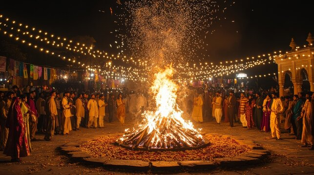

🔥 ਲੋਹੜੀ ਦੀਆਂ ਲੱਖ ਲੱਖ ਵਧਾਈਆਂ 🔥
🎉
ਤੁਹਾਨੂੰ ਅਤੇ ਤੁਹਾਡੇ ਪੂਰੇ ਪਰਿਵਾਰ ਨੂੰ
ਲੋਹੜੀ ਦੀਆਂ ਲੱਖ ਲੱਖ ਵਧਾਈਆਂ 🙏🔥
ਹੇਠਾਂ ਆਪਣਾ ਨਾਮ ਲਿਖੋ ਅਤੇ ਇਹ ਖੁਸ਼ੀ ਅੱਗੇ ਸਾਂਝੀ ਕਰੋ 💛 🎉
ਹੇਠਾਂ ਆਪਣਾ ਨਾਮ ਲਿਖੋ ਅਤੇ ਇਹ ਖੁਸ਼ੀ ਅੱਗੇ ਸਾਂਝੀ ਕਰੋ 💛 🎉

🔥 ਲੋਹੜੀ ਕਿਉਂ ਮਨਾਈ ਜਾਂਦੀ ਹੈ?
ਲੋਹੜੀ ਪੰਜਾਬ ਦਾ ਇੱਕ ਪ੍ਰਸਿੱਧ ਅਤੇ ਰਵਾਇਤੀ ਤਿਉਹਾਰ ਹੈ। ਇਹ ਤਿਉਹਾਰ ਸਰਦੀ ਦੇ ਮੌਸਮ ਦੇ ਅੰਤ ਅਤੇ ਨਵੀਂ ਫਸਲ ਦੇ ਸਵਾਗਤ ਵਜੋਂ ਮਨਾਇਆ ਜਾਂਦਾ ਹੈ।
ਇਸ ਦਿਨ ਅੱਗ ਦੇ ਆਲੇ-ਦੁਆਲੇ ਇਕੱਠੇ ਹੋ ਕੇ ਰੇਵੜੀ, ਮੂੰਗਫਲੀ, ਗੱਜਕ ਅਤੇ ਪੌਪਕੌਰਨ ਅੱਗ ਵਿੱਚ ਪਾ ਕੇ ਖੁਸ਼ੀਆਂ ਮਨਾਈਆਂ ਜਾਂਦੀਆਂ ਹਨ।

🍬 ਲੋਹੜੀ ਮੌਕੇ ਕੀ ਕੀ ਬਣਾਇਆ ਜਾਂਦਾ ਹੈ?
ਲੋਹੜੀ ਦੇ ਤਿਉਹਾਰ ‘ਤੇ ਖਾਣ-ਪੀਣ ਦਾ ਖਾਸ ਮਹੱਤਵ ਹੁੰਦਾ ਹੈ।
🥜 ਰੇਵੜੀ ਅਤੇ ਗੱਜਕ
ਤਿਲ ਅਤੇ ਗੁੜ ਨਾਲ ਬਣੀਆਂ ਇਹ ਮਿਠਾਈਆਂ ਲੋਹੜੀ ਦੀ ਪਹਿਚਾਣ ਹਨ।
🌽 ਪੌਪਕੌਰਨ ਅਤੇ ਮੂੰਗਫਲੀ
ਅੱਗ ਵਿੱਚ ਪਾ ਕੇ ਇਹਨਾਂ ਨੂੰ ਭੇਟ ਕਰਨਾ ਖੁਸ਼ਹਾਲੀ ਦਾ ਪ੍ਰਤੀਕ ਮੰਨਿਆ ਜਾਂਦਾ ਹੈ।

🎶 ਲੋਹੜੀ ਦੇ ਰਵਾਇਤੀ ਗੀਤ
ਲੋਹੜੀ ਦੇ ਗੀਤ ਪੰਜਾਬੀ ਸਭਿਆਚਾਰ ਅਤੇ ਖੁਸ਼ੀ ਦੀ ਅਸਲੀ ਝਲਕ ਹਨ।
- 👉 ਸੁੰਦਰ ਮੁੰਦਰੀਏ ਹੋ
- 👉 ਲੋਹੜੀ ਆਈ ਲੋਹੜੀ ਆਈ
- 👉 ਫੇਰ ਲੋਹੜੀ ਆ ਗਈ ਵੇ